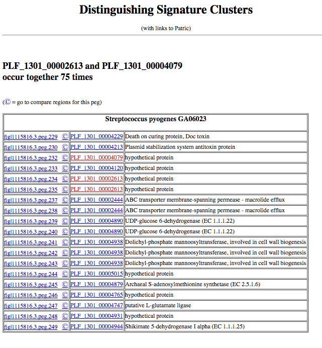
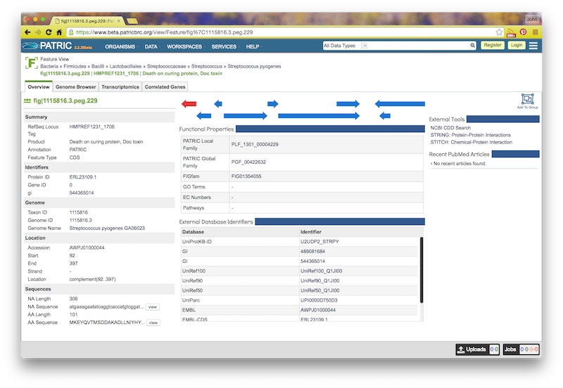
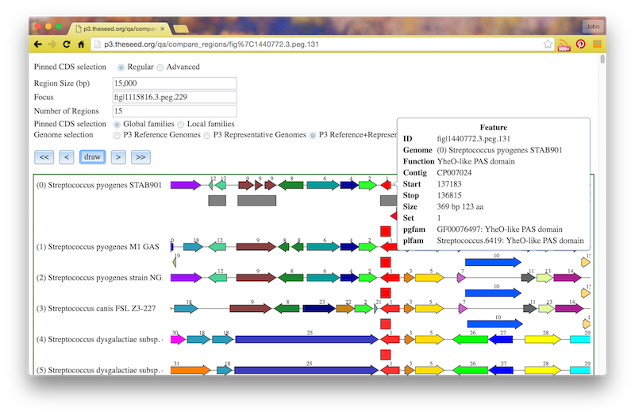
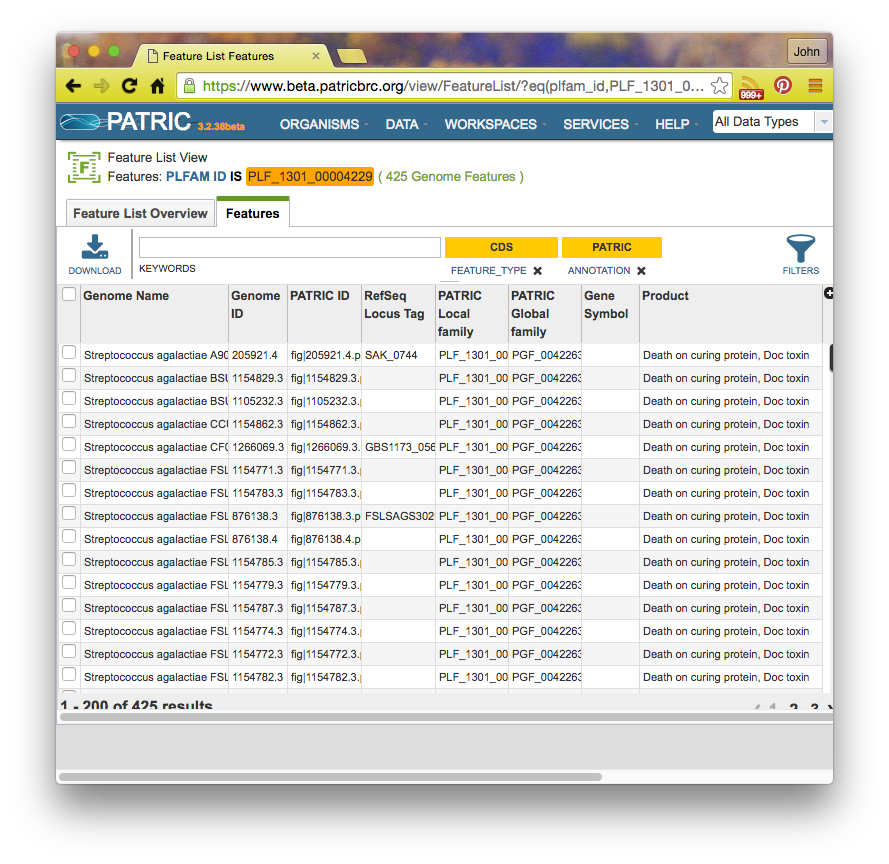

Computing Signature Clusters: an Application of the Command-Line Tools
Introduction: What is a Signature Cluster?
In this tutorial, we show how to use a tool that we have created to
help you locate clusters of genes that distinguish genomes from
two designated sets of genomes. For example, suppose that you have
a set of genomes from a given species and a second set from different species
in the same genus. In this case, we might look for chromosomal clusters that occur in
most genomes from the specific genus, but almost never occur in genomes
from a different species in the same genus. This is just one of a growing set of tools
you can use to access PATRIC data, but we think of it as extremely interesting.
So, the general operation we are implementing might be described as follows:
-
Define a set of closely-related genomes (usually a set of genomes
from a single species). Call this set GS1.
-
Define a second set of genomes which will be used for comparison and
call it GS2. Typically this would be a set establishing a "context".
The usual contents of GS2 would be genomes from the same genus,
but different species.
-
Then define the notion of signature family as a protein family in
which all members (or almost all members) occur in all genomes in GS1,
but no (or very few) genomes in GS2.
-
Finally, define a signature cluster as a set of instances of
signature families that occur close to one another on the contigs
of a genome in GS1. Since a signature cluster contains only
signature families, by definition it can occur in GS1, but only very seldom in
GS2.
We will argue that the signature clusters are very effective for
locating chromosomal clusters that are very local phylogentically and
correspond to molecular machines that are quite different from those
that include the core cellular machinery. They are things like
- virulence factors,
- antibiotic fabrication mechanisms,
- prophages,
- special transportation cassets,
- and so forth.
How to Compute Signature Clusters
In this short tutorial we will compute signature clusters for
Streptococcus pyogenes. The actual computation can be done
for any genus and species for which you have enough genomes (say,
20 within the species and 20 from different species within the same genus).
Step 1: Defining GS1 and GS2
The following three lines of code create three tables encoding genome sets.
We have included "head" statements to show that each row in each table contains two fields: a genome id and a genome name.
p3-all-genomes --attr genome_name --eq 'genome_name,Streptococcus' > all.strep.genomes
head all.strep.genomes
genome.genome_id genome.genome_name
1313.7014 Streptococcus pneumoniae P310839-218
208435.3 Streptococcus agalactiae 2603V/R
171101.6 Streptococcus pneumoniae R6
160490.10 Streptococcus pyogenes M1 GAS
568814.3 Streptococcus suis BM407
862971.3 Streptococcus anginosus C238
888833.3 Streptococcus australis ATCC 700641
864569.5 Streptococcus bovis ATCC 700338
482234.3 Streptococcus canis FSL Z3-227
p3-match --col 2 pyogenes < all.strep.genomes > pyogenes
head pyogenes
genome.genome_id genome.genome_name
160490.10 Streptococcus pyogenes M1 GAS
1314.192 Streptococcus pyogenes strain NGAS322
798300.3 Streptococcus pyogenes MGAS15252
864568.3 Streptococcus pyogenes ATCC 10782
1314.198 Streptococcus pyogenes strain NGAS743
1314.197 Streptococcus pyogenes strain NGAS596
1314.196 Streptococcus pyogenes strain NGAS327
1314.168 Streptococcus pyogenes strain 19615
301451.4 Streptococcus pyogenes serotype M18 strain CPost
p3-match --col 2 pyogenes --reverse < all.strep.genomes > not.pyogenes
head not.pyogenes
genome.genome_id genome.genome_name
1313.7014 Streptococcus pneumoniae P310839-218
208435.3 Streptococcus agalactiae 2603V/R
171101.6 Streptococcus pneumoniae R6
568814.3 Streptococcus suis BM407
862971.3 Streptococcus anginosus C238
888833.3 Streptococcus australis ATCC 700641
864569.5 Streptococcus bovis ATCC 700338
482234.3 Streptococcus canis FSL Z3-227
862969.3 Streptococcus constellatus subsp. pharyngis C1050
The first command looks at all of the PATRIC genomes, keeps only
those which have 'Streptococcus' within the genome_name field,
and writes out one line for each extracted Streptococcus genome.
This is actually a fairly complex incantation, so we urge you to
try to construct the corresponding command for a different species (say,
Staphylococcus).
Then the p3-match commands create a list of Streptococcus pyogenes
genomes and a set of Streptococcus genomes that are not from the
pyogenes species.
Please construct corresponding sets for Staphylococcus aureus
(that is, construct the two files aureus and not.aureus).
Once you have constructed your genome sets, verify that they include what
appear to be a reasonable collection of genomes.
Computing Signature Clusters
Now that we have GS1 and GS2 defined, we can compute the
signature clusters using something like
p3-related-by-clusters --gs1 pyogenes \
--gs2 not.pyogenes \
--sz1 20 \
--sz2 20 \
--min 0.8 \
--max 0.1 \
--iterations 2 \
--output Strep
Let us briefly discuss the process being requested:
- First, we take 20 random genomes from GS1
and 20 from GS2 (these sizes are specified by sz1 and sz2)
Then, we compute the protein families that occur in at
least 80% of the genomes in GS1, but none of the genomes in
GS2 (the thresholds are specified by the min and max
arguments). These are the signature families that we will use to
search for signature clusters.
- Then we compute the desired signature clusters, base on the reandomly selected
genome sets.
- We save the clusters computed; this is called a single iteration.
We redo the selection of random genomes, computation of signature families, and
computation of signature clusters (added to a growing set), until we
have completed the requested number of iterations (in our example, we specified "2").
Thus, we build up a collection of signature clusters recorded in the designated ouput
directory.
Looking at the Results
To look at the computed signature clusters, use something like
p3-format-results -d Strep | p3-aggregates-to-html > clusters.html
open clusters.html
The results will look something like this:

If you click on the feature ID, you will be taken to the Patric Feature Page for that feature:

If you click the circled C on a feature, you will see a "Compare Regions" screen centered on that feature, like this:

If you click on a family id, you will be taken to a Patric Family Page:

Summary
We have implemented a tool that, given two sets of genomes, will compute
the signature clusters that occur (or tend to occur) in genomes from
one set but not in genomes from the other. The sets of genomes are
tken from the current release of the PATRIC database.
We have illustrated one intended use: finding the signature clusters
that distinguish a species from other species within a phylogenetic
context (the genus).